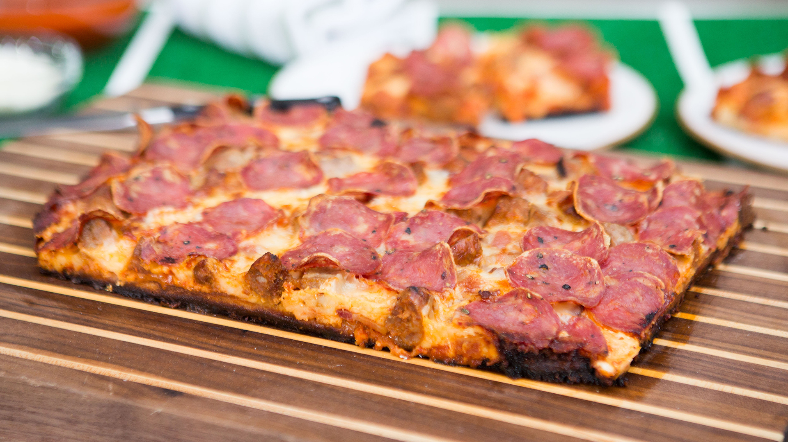

Pizza Recipe

Sausage and Pepperoni Pizza
Easy homemade thin crust three cheese spicy sausage and pepperoni pizza!
Ingredients
- 1/2 C water
- 1/2 tsp active dry yeast
- 1/4 tsp granulated sugar
- 1 1/4 C all purpose flour
- 3/4 tsp salt
Steps
- Heat water to 115°F. Combine warm water with yeast and sugar. Allow mixture to proof for 5-10 minutes.
- In a large bowl or stand mixer, combine flour and salt. With mixer running, add yeast mixture, followed by olive oil. Mix until a smooth ball forms. Knead by hand if necessary. Transfer dough to a lightly greased bowl. Cover and allow to rise in a warm location for roughly one hour or until doubled in size.
- Remove casings from sausage. In a medium skillet, cook sausage over medium heat until cooked through. Break apart into smaller pieces while cooking. Transfer to a paper towel lined bowl or plate.
- Preheat oven to 425°F
- Lightly grease a baking sheet with olive oil. Shape dough to desired size and shape. Spread pizza sauce evenly over dough. Sprinkle with Parmesan cheese. Top off with cooked sausage, followed by mozzarella and cheddar cheese. Finish off with pepperoni slices and black pepper.
- Bake for 20-22 minutes or until desired crispness is reached.
- Slice and serve warm.